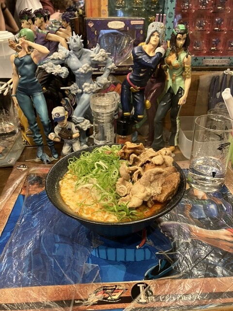
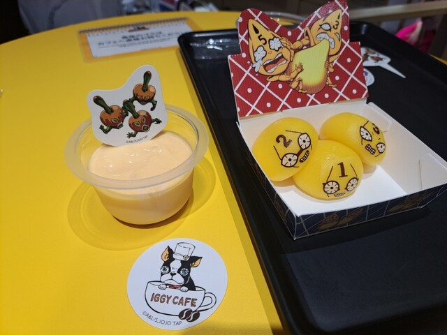

Hamburg & Omurice no Omise Ikura Shibuya ten and taste very good
rilakkuma arashiyama cafe
a highly interactive theater experience located in the Kita Ward of Osaka
a highly rated, family-friendly interactive entertainment venue located near Sensō-ji Temple
Hamburg & Omurice no Omise Ikura Shibuya ten
so many sushi

ramen with jojo style and so much figure

iggy cafe with a good view